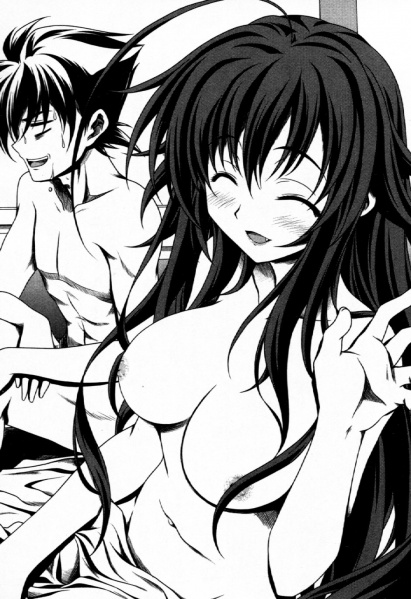
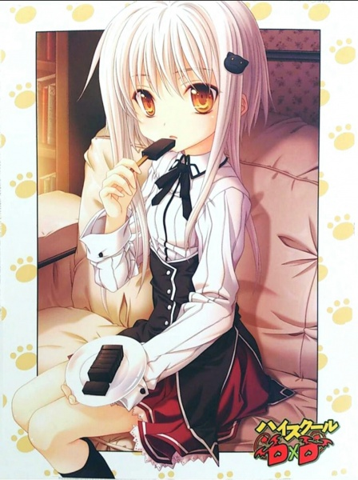

Život 1
Odustao Sam Biti Ljudsko Biće
Deo 1
PROBUDI SE! PROBUDI SE! AKO SE NE PROBUDIŠ, POLJUBIĆU TE...
„...Umm.“
Bio je to budilnik, onaj nadobudnoglasni, koji vas je budio, ali ni on sam nije imao funkciju da svog vlasnika izvuče iz kreveta. Taj vlasnik se upravo stropoštao na pod, prenuvši se iz noćne more.
To sam bio ja.
...Najgori mogući način da se probudiš.
Opet sam sanjao onaj užasan san.
U poslednje vreme mi se stalno ponavlja. San u kom me Juma-čan ubija.
Ali, pošto sam još uvek ovde, živ, mora da je bio samo san.
„Probudi se, Ise!“
Mamin glas se začu sa stepeništa. Kao i svakog jutra.
„Znam! Evo ustajem!“
Odgovorih joj, te se nekako podigoh sa poda.
Haah…
Dan mi opet počinje naopako.
Osećam se tako potišteno… Navukoh uniformu uz dubok uzdah.
Deo 2
„Idem ja.“
Zevnuh izlazeći iz kuće.
Dok sam pešačio do škole, nisam mogao da ne zatvorim oči od jarkog sunca. Aah, kako je to naporno.
U poslednje vreme mi sunčeva svetlost sve teže pada.
Čini mi se kao da mi probada kožu, ne mogu da je podnesem.
U svakom slučaju, jutarnje sunce mi nikako ne prija. Uopšte ne mogu da se razbudim ujutru.
Pošto se u poslednje vreme nikako nisam budio sam, mama me budi svakog dana.
S druge strane, noću postajem aktivniji. Nešto se u meni budi, diže me i napetost mi raste.
Potpuno sam postao noćni tip.
Čudno.
Nešto nije u redu. Često ostajem budan do kasno, ali je pravo čudo ako uopšte uspem da ostanem budan do jedan sat.
A sada, bez problema ostajem budan do tri ili četiri. U poslednje vreme zaspim tek posle izlaska sunca, i to mi je postala svakodnevna rutina.
Nisam zavisnik od onlajn igrica, niti sam zalepljen za noćne emisije.
…Šta se to dešava sa mojim telom?
Da li moj mozak pokušava da ne spava kako ne bih morao da sanjam onaj san u kom me devojka ubija?
…Pa, to je samo neki lični osećaj, tako da sigurno nije to. Prirodno je da telo oseća potrebu za snom.
Osećaj koji imam noću — mislim da je potpuno drugačiji nego ranije.
Ne znam kako da ga objasnim, ali telo mi je prepuno energije, imam osećaj da se nešto tajanstveno diže iz dubine mog bića.
Zato sam jedne noći izašao da to testiram. Korak mi se ubrzao, a srce mi je poskočilo od radosti kada sam se stopio sa noćnim mrakom.
Iz čista mira sam noću izjurio napolje, i na moje iznenađenje, to mi je dalo neverovatnu brzinu.
Kada bih se pridružio atletskom timu, lako bih postao glavni trkač. Takođe, ne gubim dah. Imam toliko izdržljivosti da maraton mogu da pretrčim kao da džogiram.
Previše sam se opustio, pa sam sprintao tokom dana, i bilo je tako užasno da sam pomislio da je moja noćna izdržljivost bila samo san. Ne, brzina je bila prosečna za srednjoškolca, ali je razlika između mene noću i mene danju ogromna.
Noću postajem čudan.
Možda zvuči kao izraz čudaka koji to izgovara, ali osećaj oslobađanja i uzbuđenja koje imam noću me pretvara u drugu osobu. Uggh… kao što sam i mislio, sunčeva svetlost mi teško pada…
Za razliku od noći, danju postajem potpuno slab.
Koliko god razmišljao o tome, nešto definitivno nije u redu sa mojim telom.
Ne mogu a da ne pomislim da se moje telo promenilo još onog dana kada sam bio na sastanku sa Jumom-čan.
Deo 3
Privatna škola. Akademija Kuo.
To je škola koju pohađam.
Sada je mešovita, ali pošto je do pre par godina bila ženska škola, ima više devojaka nego dečaka.
Kako razredi postaju niži, broj dečaka se povećava, ali i dalje ima više devojaka u globalu.
Ja sam učenik druge godine srednje škole, a odnos devojaka i dečaka u mom odeljenju je 7 prema 3. Za učenike treće godine je 8 prema 2.
Čak i sada, devojke imaju mnogo veći autoritet od dečaka, a većina učenika u Učeničkom savetu su devojke, a i predsednica Učeničkog saveta je devojka.
To je škola u kojoj dečaci ne mogu da dođu do izražaja, ali sam se ja ipak upisao u ovu školu.
Prosta priča.
Ovde ima više devojaka. To je samo po sebi divno!
Razlog zašto sam uspeo da položim prijemni ispit za ovu školu, za koju se kaže da je veoma teška, jeste moja perverzna hrabrost.
Želim da učim okružen devojkama — samo iz tog razloga trenutno pohađam ovu školu.
Šta fali tome!
Šta fali tome što sam nastranjak!?
To je moj život! Neću dozvoliti nikome da mi protivreči! Stvoriću harem u ovoj školi!
I tako, to je bila moja misija kada sam prvi put kročio u ovu školu.
Ali sada se osećam potišteno. Bio sam naivan kada sam mislio da mogu da imam 2 ili 3 devojke u ovoj školi u kojoj su većina učenika devojke.
Samo jedna grupa lepih momaka je popularna, a devojke me ni ne primećuju. Da budem precizniji, ignorišu me kao đubre bačeno na pod.
Prokletstvo!
Ovo nije bilo u planu!
Besmislice! U mom planu je trebalo da dobijem prvu devojku odmah po dolasku u ovu školu!
Posle toga, raskinuću sa njom i počeću da se viđam sa drugom, i do mature je trebalo da se gomila devojaka otima za mene u borbi do istrebljenja!
A-Ali, ovim tempom, moj cilj će se pretvoriti u san!
Čekaj, da li je to već san!?
Šta nije u redu sa mnom!? Doba u kom sam rođen? Zakon?
Ili... da nije nešto pogrešno sa mnom...?
Uwaaaaaaah! Ne želim ni da mislim o tome!
To su misli koje mi prolaze kroz glavu svakog dana.
Dolazim u učionicu uz dubok uzdah i sedam na svoju stolicu.
"Ćao, druže. Kakav je DVD što sam ti pozajmio? Dobra stvar, ha?"
Ćelavi momak koji mi se obratio je moj drug broj 1, Macuda. Možda izgleda kao sportista, ali je perverznjak koji svakodnevno daje seksualno uznemirujuće komentare.
Bio je sportski tip tokom osnovne škole, gde je oborio mnoge rekorde, ali je sada u Foto-klubu. Sasvim otvoreno priznaje svoju ambiciju da fotografiše svaki deo ženskog tela kroz objektiv kamere.
Nadimci su mu "Perverzni Ćelavac" i "Seksualno Uznemiravajući Paparaco".
"Uh... vetar je danas bio jak. Zahvaljujući tome, imao sam dobar pogled na ženske gaćice."
Momak sa naočarima koji pokušava da glumi kul tipa je moj drug broj 2, Motohama. On ima posebnu sposobnost zvanu Skauter, koja mu omogućava da dobije numeričke vrednosti ženskih mera kroz svoje naočare. Uz specijalno telo čiji nivo moći drastično pada kada skine naočare.
Nadimci su mu "Perverzne Naočare" i "Skauter Tri-veličine". Njih dvojica su moje zle drugare.
Ozbiljno, kad vidim ova dva lica ujutru, odmah se osećam loše. Muka mi je.
"Nabavio sam neke dobre stvari."
Macuda otvara torbu i bez oklevanja istresa stvari iz nje na sto.
Knjige i DVD-jevi koji se gomilaju na mojoj klupi imaju sugestivne naslove.
"Hi!"
Tihi vrisak dolazi od devojke koja je daleko od nas.
Pa, naravno da će tako reagovati. Na kraju krajeva, nešto ovako se dešava ujutru.
Ono što sledeće čujem od devojaka su diskriminišući komentari poput "Vi ste najgori~" i "Umrite, prljavi balavci".
"Tišina! Ovo je naša zabava! Devojke i deca treba da sklone pogled i da se drže podalje! Inače, silovaću vas sve u svojoj glavi!"
Tvoje reči su vulgarne kao i uvek, Macuda-kune.
Ne tako davno, rekao bih, "Vau, odakle ti ova blaga!?" sa sjajem u očima gledajući gomilu stvari na mojoj klupi. Ali pošto sam u užasnom stanju svakog jutra u poslednje vreme, nisam raspoložen.
Macuda uzdiše gledajući moje beživotno lice.
"Hej, hej, hej. Zašto imaš takvo lice kada su tolika blaga pravo ispred tebe?"
"Nisi bio raspoložen u poslednje vreme. Čudno. Definitivno je čudno. Nisi isti kao pre."
Motohama takođe to kaže dok namešta naočare, kao da mu postajem dosadan.
"I ja želim da kažem, "Vau! Odakle ti ovo!? Da ne pokušavaš da me pretvoriš u majmuna!?", ali u poslednje vreme mi nedostaje energije."
"Da nemaš neku bolest? Ne, ne može biti. Nema šanse da ti, manifestacija svih seksualnih želja, padneš bolestan."
Motohama daje nepristojan komentar o meni. Stvarno je bezobrazan tip.
Onda Macuda maše rukom kao da se nečega setio.
"O, da nije to? Da nisu to nuspojave one halucinacije o zamišljenoj devojci koju imaš? Juma-čan, je l' tako?"
"...Zar se vi ozbiljno ne sećate Juma-čan?"
Obojica me gledaju sa sažaljivim pogledom na moje pitanje.
"Kao što smo rekli i ranije, ozbiljno je ne poznajemo. Trebalo bi stvarno da odeš kod lekara da te pregleda. Je l' tako, Motohama?"
"Da, ponoviću ovo opet, ali nama nikada nije predstavljena devojka po imenu Juma-čan."
...Oni se uvek ovako ponašaju svaki put kada ih pitam o Juma-čan.
Mislio sam da me samo zezaju.
Ali nakon što sam ozbiljno razgovarao sa njima, shvatio sam da to nije slučaj.
Sećam se, sigurno se sećam da sam im predstavio Juma-čan. Rekli su stvari poput: "Kako to da lepotica kao ona bude Iseova devojkaaaaa!?" i "Sigurno se desio sistemski error u ovom svetu... Ise, nisi uradio ništa ilegalno, zar ne?", i nastavili su sa nepristojnim komentarima.
Sećam se da sam se bio poneo i rekao: "Trebalo bi i vi da nađete devojku."
Sećam se tog trenutka vrlo jasno.
Ali oni se ne sećaju. Ne, ono čega se oni uopšte ne sećaju je Juma-čan.
Kao da Amano Juma nikada nije ni postojala.
Kao da se vreme koje sam proveo sa Juma-čan nikada nije ni dogodilo.
Kao što su ova dvojica rekli, oseća se kao da je sve to bila samo moja mašta.
Kao što su ova dvojica dokazala, u mom mobilnom telefonu nema traga Juminom broju telefona ili mejl adresi.
Da li je izbrisano iz memorije? Da li je neko izbrisao? Ne, to nije moguće! Nema šanse da bih ja to izbrisao, pa ko je onda!?
Pozvao sam broj koji sam zapamtio u glavi, ali taj broj telefona trenutno nije bio u upotrebi.
Da li to znači da ona ne postoji? Da li je sve to bila moja mašta? Nešto ludo poput toga nije moguće...
Želim da to poreknem, ali osim mog sećanja, nema dokaza koji bi potvrdili da je ona postojala.
Ako razmislim o tome, ne znam njenu kućnu adresu. Bila je učenica iz druge škole. Pronašao sam školu u kojoj su nosili uniforme slične njenoj. Pitao sam učenike iz te škole za Juma-čan.
Ali nije bilo učenice koja bi odgovarala njenom opisu. Nije je bilo tamo.
Pa ko je onda bila moja devojka?
Sa kim sam se ja to zabavljao?
Dakle, san koji sam sanjao je samo fantazija koju sam izmislio?
Da li sam pričao sa Macudom i Motohamom o svom snu kao da je sve to stvarnost?
Šta sam ja, perverznjak?
Jasno se sećam njenog lica, znate?
...Nešto nije u redu sa svim ovim.
Kao i čudna snaga koju dobijam noću. Definitivno nešto nije u redu.
Ali šta je to?
Dok razmišljam o prošlim događajima, Macuda mi spušta ruku na rame.
"Pa, u sredini smo mladosti, tako da nam se mogu dešavati čudne stvari poput ove. Dobro onda, momci, dođite kod mene posle škole. Da zajedno gledamo moju tajnu kolekciju."
"To je odlična ideja. Macuda-kun, trebalo bi definitivno da pozoveš i Ise-kun."
"Naravno da ću ga pozvati, Motohama-kun. Mi smo srednjoškolci koji se kreću vođeni seksualnim željama. Ako ne radimo ništa perverzno, to bi bilo nepoštovanje prema našim roditeljima koji su nas rodili."
Njih dvojica se pohotljivo smeškaju.
Perverznjaci. Bez obzira kako ih gledaš, oni su samo neki perverzni jezivci. I nažalost, ja sam jedan od njih.
Pa, nema veze. I ja živim za ovakve stvari.
"Dobro onda! Danas se nećemo suzdržavati! Uzećemo gazirana pića i čips dok gledamo porno DVD-jeve!"
Kažem jer me mrzi da razmišljam.
"O! Da, to je to! To je definitivno Ise kakvog poznajemo!" "To je duh. Treba još više da uživamo u našoj mladosti."
Macuda i Motohama se uzbuđuju.
Incident sa Juma-čan ću ostaviti na čekanju.
I meni ponekad treba pauza! Danas ću zaboraviti na taj incident i zakačiti se za porniće kao što to dečak u našim godinama radi!
Dogodilo se to nakon što smo napravili plan za popodne.
Grimizna boja mi je privukla pažnju.
Briljantna grimizna boja—
Školsko dvorište se vidi sa prozora učionice. Oči su mi zalepljene za određenu devojku.
Devojka sa grimizno crvenom kosom. Naš školski idol čija je lepota iznad ljudske. Njene vitke proporcije nisu oblik japanske devojke.
Naravno. Ona ipak nije Japanka. Čuo sam da ljudi govore da je iz Severne Evrope.
Čini se da pohađa japansku srednju školu zbog očevog posla.
Svako će biti očaran njenom lepotom nakon što je vidi.
Rias Gremori.
Ona je učenica 3. godine ove škole. To znači da je starija od mene.
Kada to shvatim, svi, uključujući i mene, gledaju u nju, i dečaci i devojčice. Macuda i Motohama je takođe gledaju.
Ovo se dešava svakog jutra. Svi je gledaju kada prolazi pored njih. Neki ljudi prestanu da hodaju. Drugi prestanu da pričaju. Svi se okreću da je pogledaju.
Vetar nežno mrsi njenu grimiznu kosu dok je svaki učenik u školi posmatra.
Njena duga, grimizna kosa koja se spušta do kukova čini da njeno okruženje izgleda kao da je obojeno u grimizno kada vetar zatalasa njenu kosu.
Njena prelepa koža, bela kao sneg, je izuzetna.
Prelepa.
To je jedina reč koja je opisuje u jednoj reči. To je jedina reč koja ti je potrebna da je opišeš.
I ja sam bio opčinjen njenom lepotom i plemenitom aurom.
Toliko sam fasciniran njome da uvek prekinem sve što radim svaki put kada je vidim.
Ali u poslednje vreme, način na koji je vidim se promenio.
Ona je definitivno lepa. Ali je previše lepa.
Počinjem da osećam mali strah od njene lepote i da je se plašim iz dubine duše.
Ne znam zašto sam počeo da se osećam ovako. Ali počeo sam da se osećam ovako otkako je Juma-čan nestala.
Tada, njene oči se pomeraju. Njene bistre plave oči me zgrabe.
—!
Osećam se kao da mi srce biva zgrabljeno.
Šta je ovo osećanje? To je onaj osećaj koji dobiješ kada neko ko je superiorniji od tebe stoji ispred tebe...
Ona sužava svoje plave oči i izgleda kao da se smeši.
Da li gleda u mene?
Ne može biti. Nemam nikakve veze sa njom.
Onda, odjednom se setim nečega iz sna koji sam sanjao.
Na kraju sna, bila je osoba sa grimiznom kosom koja mi se obratila.
Osoba koja deluje blago, ali i hladno.
Dok je upoređujem sa osobom iz svog sna, ona je već nestala iz mog vidokruga.
Deo 4
"Ozbiljno želim da zgrabim neke sise!"
Grlim Macudu koji ne prestaje da plače dok svi zajedno gledamo poslednji video za naš maraton porno DVD-jeva.
Nakon škole, počeli smo da gledamo porniće puni poleta. Svi smo bili srećni i uzbuđeni kada smo počeli da gledamo porniće odmah posle škole, ali kako smo ih više gledali, počeli smo da padamo u depresiju, jer se u našim razgovorima nametnulo pitanje "Zašto mi nemamo devojku?". Osetio sam se kao da ću zaplakati nakon što smo ozbiljno razgovarali o tome.
Macuda ne prestaje da plače već tri filma unazad.
Motohama pokušava da glumi kul tipa, ali mu suze teku iz očiju iza naočara.
Pre trideset minuta, Motohama je tihim glasom rekao: "...Pitala me je jedna devojka da dođem iza fiskulturne sale... To je bio prvi put da me devojka opljačka...", tako da sam i ja bio na ivici suza nakon što sam to čuo.
Pitam se kako izgledaju trojica momaka koji su potišteni dok gledaju porniće?
Očigledno, odgovor je trojica nepopularnih momaka.
Prokletstvo. Počinjem da mrzim ovaj svet kada pomislim da postoje momci mojih godina koji se upravo sada seksaju sa devojkom.
Dok razmišljam o tome, poslednji film se završava i napolju je već mrak.
Kada pogledam na sat, već je deset sati. Već sam rekao roditeljima da sam kod Macude, ali će se zabrinuti ako ostanem ovde duže, a i zakasniću sutra u školu.
"U svakom slučaju, ja ću sada krenuti."
Nakon što sam to rekao, svi smo ustali i spremili se da se spakujemo.
"Vidimo se."
Nakon što smo se rastali sa Macudom na ulazu, Motohama i ja smo krenuli ka kući.
"Prelepa noć. Pošto je ovako lepo veče, normalno je da ti se gledaju pornići."
Motohama je izgovorio neke čudne gluposti gledajući u nebo uz dubok uzdah.
Izgleda stvarno potišteno.
Pa, sutra će se i Motohama i Macuda vratiti svojim uobičajenim ja.
"Vidimo se sutra."
"Da, lepo sanjaj."
Rastajem se sa Motohamom na putu kući, ali ne izgleda energično dok mi maše rukom.
Verovatno ću mu kasnije poslati poruku da ga oraspoložim.
Prošlo je nekoliko minuta nakon rastanka sa Motohamom.
Hodam ka kući, ali energija koja struji mojim telom raste.
To je simptom one stvari "preplavljen snagom noću".
Kao što sam i mislio, definitivno nešto nije u redu sa mojim telom.
Ovo nije normalna pojava. Moj vid se poboljšava zajedno sa ostalih pet čula.
Oči i uši su mi postali posebno dobri. Čak mogu da čujem razgovore iz tuđih kuća i da vidim ulicu iako je noć.
Ovo je stvarno čudno jer mogu jasno da vidim i na mestima gde nema ulične rasvete!
Osećam kao da ova snaga postaje sve jača iz dana u dan.
To je zato što su trnci koje osećam po celom telu upravo sada prava stvar!
Osećam da me neko posmatra već neko vreme.
I trnci koje osećam.
Osećam misterioznu atmosferu ispred sebe.
Moje telo se ludo trese. Tresenje postaje sve jače.
To je muškarac. Tamo je muškarac u odelu, koji me zuri.
Zuri u mene žestokim očima.
Osećam kao da ću se smrznuti samo gledajući ga u oči.
Zar se ovo ne zove ubilačka namera?
Definitivno mogu da osetim neprijateljstvo od njega. Ne, ovo je nešto opasnije. Ovo je definitivno ubilačka namera!
Čovek se približava, tiho. Ide ka meni! Dakle, on ide na mene!
Perverznjak!? Opasan čovek!? Da li sam u nevolji!?
Ovo je loše! Zato što moje telo ne prestaje da se trese!
Zašto sam morao da naletim na nekog opasnog tipa na putu kući!?
"Ovo je retko. Sresti nekoga poput tebe na ovakvom mestu."
............?
Šta on to priča?
Ne, ne, nije čudno ako ludaci poput njega pričaju besmislice.
Dakle, on je ipak opasan tip!
O, sranje! Šta da radim ako izvadi nož!?
Ne znam nikakve borilačke veštine samoodbrane, niti sam se ikada potukao!
I-Ideja!
Moja snaga koja se pojačava noću! To je to! Mogu je iskoristiti da pobegnem odavde!
Hodajući unazad, pravim razmak između nas.
Tip koji zrači perverznom atmosferom počinje da ide ka meni.
"Pokušavaš da pobegneš? Ko je tvoj Gospodar? Mora da je osoba veoma niskog ranga ili sa čudnim hobijem kada je izabrala ovo mesto za teritoriju. Dakle, ko je tvoj Gospodar?"
Ne znam ni šta dođavola pričaš!
KORAK!
Okrećem se i sprintam nazad odakle sam došao, punom brzinom.
Brzo. Ludo sam brz. Čudno mi je to da kažem, ali brzina mojih nogu noću je ludačka.
Samo nastavljam da trčim, prolazeći kroz različite ulice u noći.
Još nisam ostao bez daha. Mogu da nastavim da trčim. Ako je tako, onda ću trčati dok me ne izgubi!
Nakon otprilike 15 minuta, izlazim na otvoren prostor.
—To je park.
Prestajem da trčim i umesto toga hodam.
Prilazim fontani, udišući vazduh.
Gledam po parku pod uličnom svetiljkom. Nešto je misteriozno u vezi sa ovim mestom.
—Znam ovo mesto.
Sećam se ovog parka...
Tako je. Ovo je poslednje mesto koje sam posetio na svom sastanku sa Juma-čan!
Čoveče, kakva slučajnost, ili da to nazovem čudom?
Da li sam došao ovde nesvesno? To ne može biti...
TRNCI
Osećam trnce na leđima.
Neko je iza mene... To osećam.
Polako se okrećem, i crno pero pada ispred mene.
Da li je to pero vrane? Ne, nije.
"Jesi li mislio da ću ti dozvoliti da pobegneš? Zato su niska bića muka za rukovanje."
Osoba koja se pojavila ispred mene je muškarac u odelu i ima crna krila koja mu rastu iz leđa.
To je onaj sumnjivi tip od ranije.
...Anđeo? Ne, ne, ovo nije bajka, tako da to ne može biti!?
Da li je to kostim? Izgleda previše stvarno za kostim. Da li su to p-prava krila? Nema šanse!
"Reci mi ime svog Gospodara. Smeta mi da se zamaram tvojom vrstom. Zbog toga ćemo... Čekaj, da nisi ti "Lutalica"? Ako nemaš Gospodara, onda bi to objasnilo zabrinuti izraz na tvom licu."
Sumnjivi tip mrmlja sebi u bradu. Ne izmišljaj stvari sam!
Situacija je ozbiljna, ali odjednom se setim incidenta koji sam imao u snu.
Sna o tom sastanku. Na samom kraju tog sna, ubila me je Juma-čan, tačno ispred ove fontane.
Da, Juma-čan koja je imala crna krila koja joj rastu iz leđa.
A ispred mene stoji tip sa crnim krilima. ...Da li je ovo ono kada san postaje stvarnost?
Hej, hej, kako se zgodna riba pretvorila u tipa!?
Ne, to nije važno! Važna je situacija u kojoj se trenutno nalazim!
Ako se ovo odvija prema tom snu, onda je sledeće što će mi se desiti—
"Hm. Ne osećam prisustvo tvog Gospodara niti tvojih drugova. Ne vidim ni da se išta pokušava sakriti. I ovde se ne pojavljuje magični krug. Prema trenutnoj situaciji, ti si "Lutalica". Tako da neće biti problem ako te ubijem." Tip koji je upravo izgovorio neke zastrašujuće stvari podiže ruku.
Bez obzira kako ga gledaš, njegova ruka je usmerena ka meni!
Čujem zvuk. Znam ovu pojavu.
Nešto što izgleda kao svetlost počinje da se skuplja u njegovoj ruci. Čekaj malo, ove fantazije treba da ostanu samo u snu!
Svetlost se zatim oblikuje u nešto što liči na koplje.
Koplje—
Dakle, to je koplje!
U snu me je to probolo u stomak, i prošao sam kroz pakao!
—Biću ubijen!
Dok sam to shvatio, već me je probolo u stomak.
Tada nešto izlazi iz mojih usta.
Guk.
Mnogo krvi mi šiklja iz usta, praćeno neizdrživim bolom.
Boli. Boli me užasno!
Padam na kolena, na mestu. Osećam kako mi unutrašnjost gori.
Bol se širi celim telom, i toliko me boli da ne mogu da izdržim.
Neizdrživ bol... ni ne počinje da opisuje ovaj bol!
Pokušavam da izvučem koplje rukom, ali bol se širi i na moju ruku čim je dodirnem. Vrelo je. Ekstremno vrelo. Tragovi opekotina se pojavljuju na mestima koja su dodirnula koplje.
"Guu... aaaah..."
Počinjem da jaučem. Boli. Boli me užasno!
Pošto mi je ruka u ovakvom stanju, da li mi koplje spaljuje unutrašnjost?
Kada sam pomislio na to, bol se pojačao. Dakle, ovako izgleda kada ti izgore unutrašnji organi?
Suze mi ne prestaju zbog neizdrživog bola.
Korak, korak. Zatim zvuk koraka koji se približavaju.
Pogledam gore, i tajanstveni čovek stvara još jedno koplje u svojoj ruci.
"Mora da boli. Svetlost je otrov za bića poput tebe. Pogodak njome će rezultirati fatalnom štetom. Mislio sam da će ovo oslabljeno koplje biti dovoljno da te ubije, ali tvoje telo je jače nego što sam mislio. Zato ću te ponovo udariti njime. Ali ovog puta ću uložiti malo više snage. Sada si gotov."
Da li pokušava da me dokrajči!? Biću ubijen ako me ponovo pogodi tim stvarima!
Dok razmišljam, počinjem da se prisećam sna.
Grimizno.
Briljantna grimizna boja će...
Ne, nema šanse da će mi ona pomoći. To je bio san. Pa, da li je i ovo san?
Ako je san, onda te molim, pomozi mi. Čak i ako je san, ne želim da budem u ovoj situaciji!
HJU
Kada sam pomislio da sam čuo zvuk vetra, eksplozija se materijalizuje ispred mene.
Kada pogledam gore, vidim dim koji se diže iz dlana tog čoveka. Krv mu curi iz ruke.
"Ne usuđuj se da ga dodirneš."
Žena prolazi pored mene.
Grimizna kosa. Mogu da prepoznam ko je, čak i samo po leđima.
To je ona osoba koju sam video u snu—
Nisam mogao da vidim njeno lice u tom snu. Ali sada sam siguran da je ona bila ta osoba iz mog sna.
"...Grimizna kosa... Mora da si žena iz kuće Gremori..."
Čovek zuri u ženu sa grimiznom kosom očima punim mržnje.
"Moje ime je Rias Gremori. Kako si, Pali Anđele-san? Ako pokušavaš da povrediš ovog dečaka, onda se neću suzdržavati."
Rias Gremori.
Da, ona je starija učenica u mojoj školi. Lepotica sa grimiznom kosom.
"...Fufu. Pa, pa. Dakle, ovaj dečak pripada tebi. Dakle, i ovaj grad je deo tvoje teritorije. Dobro onda. Za danas ću se izviniti. Ali savetujem ti da ne puštaš svog slugu slobodno. Ljudi poput mene bi mogli da ga ubiju dok šetaju."
"Hvala na savetu. Ovaj grad je pod mojim nadzorom. Dakle, ako mi staneš na put, neću se suzdržavati."
"I ja ću tebi reći isto, naslednice kuće Gremori. Moje ime je Donasek. Nadam se da se više nećemo sresti."
Čovek širi svoja crna krila, i njegovo telo počinje da lebdi. Zatim poleće u nebo.
Čovek još jednom zuri u Rias-senpai i mene, a zatim nestaje u nebu. | 1 |
Dakle, sada je bezbedno...?
Osećam olakšanje, ali mi se oči zamagljuju i čini mi se da gubim svest. Vid mi se muti.
Huh? Zar ovo nije loše? Ovo je definitivno loše, zar ne?
"Ara, da nisi na ivici da se onesvestiš? Ovo je svakako fatalna rana. Ne može se pomoći. Hej, gde ti je kuća—"
Senpai mi se obraća dok padam, ali ne čujem šta govori.
Tada, moja svest se gasi.
Deo 5
[……UBIĆU TE AKO SE NE PROBUDIŠ ……BIĆEŠ ISKASAPLJEN NA KOMADE AKO SE NE PROBUDIŠ]
Kada sam se probudio, bilo je jutro.
Šta ovo znači?
...Da nisam opet sanjao ružan san?
Mora da je bio san. Ali izgledao je previše stvarno.
Sada sam ovde, spavam u svom krevetu.
Probudio me je alarm sa jandere glasom.
Izgleda da sam ipak sanjao.
Ovog puta, nije bila Juma-čan, već neki čudan tip koji me je jurio. Ali oboje su imali crna krila.
Protresoh glavom.
Sredi se, čoveče.
Zašto stalno sanjam takve snove?
Ako se dobro sećam, juče sam išao u školu kao i obično i sve je bilo normalno. Posle škole sam otišao kod Macude i imao maraton pornića sa njim i Motohamom.
Zatim sam se vratio kući. Na putu kući, napala me je čudna osoba sa krilima—
Tada sam postao svestan neobičnog stanja u kome se nalazim.
—Gol sam.
Nemam ništa na sebi.
Šta se ovo, dođavola, dešava? Nemam čak ni donji veš!
Potpuno sam nag!
Ne sećam se toga. Ne sećam se da sam došao kući. Da ne gubim pamćenje u ovim godinama?
Takođe, nemam naviku da spavam nag.
"...Unnn"
—!
Čuo sam umilni glas.
Onda sam pažljivo pogledao pored sebe.
"...Suu~suu."
Pored mene spava devojka sa grimiznom kosom.
I ona je naga... Njena bela koža poput snega je previše blistava za moje oči.
Njena koža izgleda veoma glatko i veoma je loša za moje oči.
............
Bez obzira kako je gledaš, to je Senpai. Idol naše akademije. Njena grimizna kosa rasuta po jastuku izgleda izuzetno lepo.
Rias Gremori-senpai.
............
Huh? Huh, Huh?
Smiri se, čoveče. O, da, u ovakvim trenucima je dobro brojati proste brojeve da se smirim. 2, 3, 5, 7, 11, 13, 17, 19, 23...
Daaaah!!
Ne mogu! Ne mogu da se smirim!
Zašto spavam sa Rias-senpai!?
Šta se desilo!? Šta se desilo!?
Ne, šta sam ja uradio!? Da nisam nešto uradio!?
Ne sećam se! Ne sećam se ni trunke!
Zašto!? Moram da se setim šta sam uradio! Ne! Zašto sam u ovoj situaciji!?
Da nisam imao seks sa Senpai!?
Eh? Da li ljudi ovako gube nevinost!?
Nemoguće! To je nemoguće!
Seti se, čoveče! Pokušaj da se setiš dragocenih uspomena, čoveče!
Šta sam uradio!? Kakve sam stvari uspeo da uradim!?
Glava će mi eksplodirati od zbunjenosti, ali u sledećem trenutku sam sateran u ćošak.
"Ise! Probudi se! Već je vreme za školu!"
"Okaa-san, da li je Ise još uvek u svojoj sobi?" | 2 |
"Otou-san, cipele su mu u predsoblju, tako da je došao kući. Uh! Ostajati kod prijatelja tako kasno! Povrh toga, kasni u školu! To mu neću oprostiti!" | 3 |
Razgovor mojih roditelja iz prizemlja se čak i ovde čuje.
Zatim su usledili koraci koji se penju uz stepenice. Koraci su nosili zvuk besa. Razlikuju se od njenih uobičajenih koraka.
Mama je na putu!
Čekaj! Stani malo!
Ako vidi ovu situaciju, biće stvarno loše!
"Čekajte! Već sam budan! Odmah ustajem!"
"Uh! Više ti neću opraštati! Moramo malo da porazgovaramo o ovome!"
Mama je besna!
Dolazi! Mama dolazi u moju sobu!
Nema šanse da joj dozvolim da vidi situaciju u kojoj se nalazim!
"Unn... Da li je jutro?"
—!?
Senpai trlja oči pored mene!
Probudila se! Probudila se!
GAČA!
Vrata se naglo otvaraju. Istovremeno, Senpai takođe podiže gornji deo tela.
Moje oči i mamine oči se sreću. Izgleda besno. Izgleda veoma besno!
"Dobro jutro."
Senpai pozdravlja moju mamu sa osmehom.
Mamine oči se premeštaju sa mene na Senpai.
Zatim, mamino lice se sledi. Ponovo prebacuje pogled na mene.
Izbegavam kontakt očima.

"……SPREMI SE BRZO."
Koristeći robotski glas, polako zatvara vrata.
Posle trenutka, čujem glasan zvuk njenih koraka niz stepenice.
"O, O, O, O, Oooooo! Otou-san!"
"Šta je bilo, Okaa-san? Izgledaš kao da si videla duha? Da nije Ise opet radio nešto perverzno ujutru?"
"Seeeeeeee, seksssssssss!! Ise je uradio~! Sa strankinjom~!!"
"—!? O-Okaa-san!? Okaa-san, šta se desilo!?"
"Internacionaaaaaal~! Ise je uradio!!"
"Okaa-san!? Okaa-san!? Smiri se!! Okaa-saaaaan!"
Mogu samo da pokrijem lice rukama.
Lako mogu da zamislim šta se dešava dole.
Kako je ovo moglo da se desi? Definitivno će biti porodične rasprave posle ovoga!
Kakav izgovor mogu da upotrebim da objasnim trenutnu situaciju u kojoj se nalazim!?
"Tvoja porodica je prilično živahna ujutru."
Senpai ustaje iz mog kreveta i odlazi da uzme svoju uniformu sa mog stola.
Naga Senpai. Nago telo prelepe devojke. ......Ummm, znaš, mogu da vidim mnogo toga......
Njene uske kukove. Njene duge bele noge. Njene butine. Njenu lepo oblikovanu zadnjicu.
I njene oppai koje su prilično ogromne......
Čak mogu jasno da vidim njene bradavice!
Zašto ih ne kriješ!? Zašto ne pokazuješ nikakav znak da ih kriješ!?
Da imam Motohamin "Skauter Tri-veličine", lako bih mogao da dobijem njene mere tačno.
Upravo sada, žalim što nemam tu sposobnost.
Ali jedno znam. Video sam mnogo nagih ženskih tela iz časopisa i video snimaka, ali lepota Senpaijinog tela je mnogo veća od njih.
Kako bih to rekao? Umetnost? Telo sa savršenim oblikom i oblinama. Izgleda kao jedna od onih slika nagog tela ili statua prikazanih u muzeju.
Savršeno. Jedino što mogu da kažem je da je "lepota i dalje bila neverovatna i nakon što je skinula odeću".
Ali zuriti u nju me čini da se osećam loše.
Ne mogu da postanem potpuni perverznjak.
"S-Senpai!"
Ne mogu a da ne kažem.
"Šta je bilo?"
"O-Oppai...... Mogu sve da vidim!"
Rekao sam to dok sam skretao pogled od nje. Želim da to vidim, ali to je to. Moram da izdržim.
"Ako želiš da vidiš, samo napred."
Senpai to drsko kaže dok oblači uniformu.
Ima samozadovoljan osmeh na licu.
—!!
Da li takve japanske reči uopšte postoje!?
Strujni udar mi je prošao kroz telo!
Suze mi padaju iz očiju zbog fraza o kojima nikada ne možeš da naučiš u školi.
Duboko sam dirnut prelepom frazom.
"Da li ti je stomak u redu?"
Senpai me pita.
Stomak?
Dodirujem stomak dok gledam Senpai kako se oblači.
"Juče si bio uboden."
—!
Sa tom izjavom, potpuno sam se razbudio.
...Tako je, juče me je u parku ubo tip sa krilima.
Ubo me je kopljem koje je izgledalo kao da je napravljeno od svetlosti.
Ali nema tragova na mom stomaku. Bio sam siguran da je tu bila rupa...... To nije vrsta rane koja će zarasti za jedan dan. Bilo je toliko krvi koja je izlazila iz nje.
Da li je to bio san? Ili je bio java?
"Usput, incident od juče nije bio san."
......Senpai to kaže kao da mi čita misli.
"B-bio sam siguran da sam ranjen......"
"Ja sam to izlečila. Bilo je kritično, ali zahvaljujući tvom žilavom telu, moglo je da se izleči mojom moći za jednu noć. Podelila sam deo svojih demonskih moći sa tobom grleći te dok smo bili nagi. Uspela sam to da uradim jer smo iz istog klana."
Šta ova osoba...... priča?
Huh? Grlili smo se nagi?
............
Eeeeeeeeeeeeeeeh!
Čekaj, da li to znači......!
"Sve je u redu, jer sam još uvek nevina."
Kaže to kao da mi opet čita misli.
Ah, je li tako. Iz nekog razloga mi je laknulo.
Ili bi trebalo da mi bude laknulo?
"Ne pravi tako čudno lice. Ovaj svet je okružen misterioznijim stvarima nego što možeš da zamisliš."
Senpai mi prilazi dok je u donjem vešu. Počinje da mi tapše obraz svojim vitkim prstima.
Lice mi se crveni. Ne može se pomoći ako mi se lice zacrveni kada to radi lepotica poput nje. "Ja sam Rias Gremori. Ja sam Đavo." —-Đavo?
Huh? Šala? Nisam baš siguran......
"A ja sam tvoj Gospodar. Drago mi je, Hjudo Isei-kun. Mogu li da te zovem Ise?"
......ali njen đavolski osmeh izgleda stvarno.
Deo 6
"Itadakimasu." | 4 |
Mome dedi na nebu.
Upravo sada, u našoj kući, lepotica srče miso-supu pored mene.
"Ovo je veoma ukusno, Okaa-sama."
"D-Da. H-Hvala vam puno."
Moji roditelji koji sede naspram mene imaju čudne izraze lica.
Deda, kako da popravim ovu neobičnu atmosferu?
Prvi put doručkujem u ovakvoj neobičnoj atmosferi, i nisam siguran šta da radim u ovoj situaciji.
"Ise, to je jelo koje je Okaa-sama napravila. Jedi."
Senpai to kaže sa elegancijom. Ponaša se kao starija sestra.
"D-Da!"
Brzo odgovaram i počinjem da trpam hranu u usta.
"Nemoj da jedeš tako prostački. Jedi polako da bi osetio ukus hrane. Ovo je dragocena hrana koju je Okaa-sama napravila za nas."
Senpai mi briše usta svojom maramicom.
Šta je ovo? U kakvoj sam ja to situaciji?
"I-Ise..."
Tata mi se obraća drhtavim glasom.
Izgledaš prilično nervozno, tata. I ja sam.
"O-Odakle je ova gospođica d-došla?"
Nakon što je to čula, Senpai spušta štapiće i klanja glavu.
"...O, oprostite, nisam se predstavila... Osramotila sam kuću Gremori. Dozvolite mi da se predstavim. Okaa-sama i Otou-sama, moje ime je Rias Gremori. Pohađam istu Akademiju kao i Hjudo Isei-kun. Zadovoljstvo mi je da vas upoznam." | 5 | | 6 |
Senpai se osmehuje. Tata odgovara sa čudnim izrazom lica.
"D-Da li je tako... T-To je neverovatno. Hahaha! Da li ste iz strane zemlje? Vaš japanski je veoma dobar."
"Da. Zbog očevog posla, dugo živim u Japanu."
Oh. Izgleda da je tata ubeđen.
Ali čini se da mama, koja sedi pored njega, nije.
"Da li je Rias... -san, je li tako?"
"Da, Okaa-sama."
"Kakav odnos imaš sa Iseom?"
—!
To je dobro pitanje, može da razjasni celu situaciju od ranije.
Mama je radoznala da čuje odgovor, ali Senpai samo nastavlja da se smeši.
"Mi smo samo starija i mlađi učenik koji su prilično bliski jedno drugom, Okaa-sama."
"To je laž!"
Mama odmah odbacuje odgovor.
Naravno da hoće. Taj izgovor neće upaliti, Senpai. Pošto je videla onu situaciju, taj izgovor neće upaliti!
"Z-zato š-što! U krevetu!"
"Ise je rekao da ima noćne more, pa sam samo spavala sa njim."
"Samo spavali zajedno!? B-Bili ste oboje nagi!"
"U današnje vreme, ljudi spavaju nagi kada spavaju zajedno, Okaa-sama."
To je velika laž. Neverovatna si, Senpai.
Ali mama utihne na njene reči.
"D-Da li je tako...? Dakle, ljudi u poslednje vreme spavaju zajedno nagi." Okaa-sama!? Da li je to u redu!? Da li si ti u redu sa tim!?
Onda shvatam da mamine oči izgledaju čudno. Izgledaju prazno, kao da je opsednuta nečim.
Nakon toga Senpai mi šapuće na uvo.
"...Žao mi je. Izgledalo je kao da će postati problematično, pa sam upotrebila svoju moć."
Moć?
Onda se setim onoga što je ranije rekla.
—Ja sam Đavo.
......Đavo. Onda je i ovo zbog moći Đavola?
Senpai nastavlja da doručkuje. Kada sam proverio, i tata je imao prazne oči. Da li je upotrebila svoju moć i na njemu...?
Đavo.
Šta se to dešava?
Deo 7
Jutarnja šetnja do škole.
Koračam ka školi, ali mi je teško zbog načina na koji me drugi učenici gledaju.
Ne može se pomoći.
Pored mene je školski idol, Gremori-senpai.
A ja hodam kao njen sluga jer nosim njenu torbu.
"Zašto je neko poput njega..."
"Zašto je neko vulgaran poput njega pored Rias-oneesame..."
Mogu da čujem uzvike i dečaka i devojčica sa svih strana.
Ima i učenika koji su pali u nesvest od šoka.
Da li je to toliko loše!? Da li je toliko strašno da hodam pored Senpai!?
Prolazimo kroz školsku kapiju, i rastajem se sa Senpai na ulazu.
"Poslaću nekoga po tebe. Vidimo se kasnije."
Kaže to sa osmehom.
Poslaću nekoga? Šta to znači?
Nisam baš siguran, ali krenuo sam ka učionici.
Kada otvorim vrata, svi zure u mene.
Pa, to je normalno, pošto sam bio sa Rias-senpai.
BANG!
Neko me je udario po glavi s leđa. Kada sam se okrenuo, Macuda stoji tamo. Motohama je takođe pored Macude.
"Daj mi objašnjenje!"
Macuda viče dok plače. Po njegovom izrazu lica, mogu da pretpostavim šta želi da kaže.
"Do juče smo bili drugovi iz "Saveza Nepopularnih"!"
"Ise, pre svega, objasni nam. Šta se desilo nakon što smo se rastali?"
Za razliku od Macude koji je besan, Motohama se ponaša smireno dok namešta naočare, iako su mu oči zaista oštre. Obojica me plašite.
Ali ja se smejem, a onda ih pitam samouverenim glasom!
"Momci, da li ste ikada videli prave sise?"
Na tu jednu rečenicu, obojica zadrhte od straha.
Deo 8
Posle škole.
"Zdravo. Kako si?"
Gledam kroz polu-sklopljene oči muškog učenika koji je došao da me vidi.
Tip ispred mene je školski princ broj 1 po lepoti, Kiba Juto.
Osvojio je srca devojaka u našoj školi svojim osmehom. Usput, on je iste godine kao i ja. Mada je iz drugog odeljenja.
Mogu se čuti devojke kako vrište od radosti iz učionice i hodnika. Ućutite. Previše je prokleto bučno ovde.
"Pa, šta te dovodi ovde?"
Odgovaram mu odbojnim tonom, ali Kiba odgovara ne skidajući osmeh.
"Došao sam po naređenju Rias Gremori-senpai."
—!
Na tu jednu rečenicu, odmah shvatam zašto je ovde.
Aha, dakle on je osoba za koju mi je Senpai rekla da će poslati.
"......OK OK, i šta hoćeš da uradim?"
"Želim da me pratiš."
NEEE!!
Ovog puta su to vrisci devojaka.
"Ne, da Hjudo i Kiba-kun hodaju jedan pored drugog!"
"Bićeš zaražen, Kiba-kun!"
"Ne slažem se sa Kiba-kun×Hjudo parom!"
"Ne, možda je to Hjudo×Kiba-kun par!?"
Pričaju neke čudne gluposti.
Ućutite. Ozbiljno ućutite.
"Ah, u redu."
Pristajem da ga pratim.
Reći ću ovo unapred. Mrzim lepe momke.
Pratim Kibu, koji već korača ispred mene.
"H-Hej, Ise!"
Macuda viče moje ime.
"Ne brini, prijatelju. Neću se tući."
Tako je. Ne moraš da brineš za mene, druže.
"Šta ćeš da radiš sa ovim DVD-jem, "Ja, napasnik, i Udon" !?"
Macuda to izgovara naglas držeći DVD visoko.
Onda pogledam kroz prozor.
Pratio sam Kibu, i mesto na koje stižemo je iza školske zgrade.
Na ovom mestu, okruženom drvećem, nalazi se zgrada zvana stara školska zgrada.
Navodno je korišćena davno, i nema znakova ljudi ovde. Toliko je jeziva da je navedena u jednom od "sedam školskih čuda".
Zgrada izgleda veoma staro i napravljena je od drveta, ali nema polomljenih prozora i teško je reći da li ima polomljenih delova po izgledu.
Stara je, ali nije toliko loša.
"Bučo je ovde." | 7 |
Kiba kaže.
Bučo?
Da li priča o Senpai? Huh? Bučo?
Da li Senpai pripada nekom klubu? Da li to znači da je i on deo tog kluba?
Postaje sve misterioznije. Pa dobro, sve dok pratim ovog tipa, moći ću da se nađem sa Senpai.
Ulazimo u dvospratnu zgradu i penjemo se stepenicama. Idemo dalje u zgradu.
Čak i hodnik izgleda čisto. Čini se da čak ni sobe koje se ne koriste nemaju ni trunke prašine u njima.
Kada pomisliš na stare zgrade, očekuješ da će biti pune insekata, paukove mreže i prašine. Ali još nisam video nijednu.
Dakle, mora da čiste ovu zgradu prilično često.
Dok sam razmišljao o ovim stvarima, čini se da smo stigli na odredište. Kiba se zaustavlja ispred određene učionice.
Bio sam šokiran natpisom na vratima koji je glasio—
[Klub Okultnih Istraživanja]
Klub Okultnih Istraživanja!?
Samo čitanje tog imena me tera da se zapitam. Ne kažem da klub zvuči čudno.
Ali pomisao da je Rias-senpai članica Kluba Okultnih Istraživanja je......
"Bučo, doveo sam ga."
Kiba čeka odobrenje kroz drvena vrata. Onda Senpai odgovara.
"Da, uđi."
Izgleda da je Senpai ovde unutra.
Kiba otvara vrata i šokiran sam kada ga pratim u sobu.
Postoje čudni znaci i reči u svakom delu učionice.
Pod. Zidovi i plafon. Svi su prekriveni čudnim znacima.
A onaj koji se najviše ističe je krug nacrtan u centru sobe.
Izgleda kao magični krug koji zauzima većinu prostora u ovoj sobi.
Mogu da osetim nešto jezivo i čudno iz njega.
U sobi se nalazi i nekoliko sofa i stolova.
Hmm? Neko sedi na jednoj od sofa. To je devojka sitne građe......
Poznajem je. Poznajem tu devojku!
To je devojka iz 1. godine, Todžo Koneko-čan!
Ona je iz 1. godine, ali izgleda kao učenica osnovne škole zbog svog detinjastog lica i malog tela!
Prilično je popularna među određenim grupama momaka. Popularna je i među devojkama i tretirana je kao maskota zbog svoje slatkoće.
Tiho jede jokan. | 8 | Uvek ima pospan izraz lica.

“Ako se dobro sećam, za nju se kaže da je "veoma" bez emocija."
Ona shvata da smo ušli, i naši pogledi se sreću.
"Ovo je Hjudo Isei-kun."
Zatim Kiba me predstavlja njoj. Todžo Koneko-čan klanja glavu.
"Ah, drago mi je."
I ja klanjam glavu. Nakon pozdrava, ona nastavlja da jede jokan.
Hmm. Baš kao što glasine kažu. Možda je ona devojka koja ne priča mnogo.
ŠA-
Ovo je zvuk tekuće vode koji dolazi iz zadnjeg dela sobe. Da li je to zvuk tuša?
Onda shvatam da postoji zavesa za tuš u zadnjem delu sobe. Takođe je bila senka na zavesi.
To je senka devojke. Tamo se devojka tušira.
Huh!? Tuš!?
Ova učionica ima tuš!?
KJU
Zatim se čuje zvuk prestanka tuša.
"Bučo, uzmi ovo."
Huh? Postoji još neko osim nje?
Čujem devojčin glas koji ne pripada Senpai.
"Hvala ti, Akeno."
Izgleda da se Senpai presvlači iza zavese.
Počinjem da crvenim prisećajući se onoga što se desilo jutros.
Senpai, sigurno si imala impresivno telo. Izgleda da mi pornići neće biti potrebni neko vreme.
"......Kakvo pohotno lice."
Neko promrmlja. Kada pogledam u pravcu glasa, to je Todžo Koneko-čan.
Gledam je, ali mala učenica prve godine samo jede jokan.
......Je li tako. Dakle, imam pohotno lice. Žao mi je onda.
DŽA-
Zatim se zavesa otvara. Ona koja stoji tamo je Senpai u svojoj uniformi.
Izgleda zavodljivo sa svojom mokrom kosom. Pogleda me, a zatim se osmehne.
"Žao mi je. Nisam mogla da se istuširam sinoć jer sam prenoćila kod tebe, pa sam se istuširala sada."
Ah, je li tako?
Ali ono što me muči je to što postoji tuš u ovoj sobi.
Onda pogledam iza Senpai.
Neko je iza nje...... Da li si ozbiljna!
Toliko sam šokiran da gubim reči.
Crna kosa u repu! Rep, za koji se kaže da je skoro izumro! Osoba za koju se kaže da je poslednja osoba sa repom u našoj školi!
To lepo lice, koje se uvek smeši! Osoba sa japanskom atmosferom! Ona koja se zove Jamato Nadešiko iako je učenica, a takođe i jedan od školskih idola, Himeđima Akeno-senpai! | 9 |
Osoba za koju se, zajedno sa Rias-senpai, kaže da je jedna od "Dve Velike Onee-same"!
Osoba koju obožavaju i muški i ženski učenici!
"Ara ara. Zdravo, moje ime je Himeđima Akeno. Drago mi je."
Predstavlja se ljubazno sa osmehom. Njen glas zvuči fascinantno.
"O-Oh. Moje ime je Hjudo Isei. D-Drago mi je i meni!"
Iako sam nervozan, pozdravio sam je.
Nakon što Rias-senpai potvrđuje da smo završili sa predstavljanjem jedno drugom, ona počinje da priča.
"Izgleda da su svi ovde. Hjudo Isei-kun. Ne, dozvoli mi da te zovem Ise."
"D-Da."
"Mi, Klub Okultnih Istraživanja, te dočekujemo."
"Eh, ah da."
"Kao Đavola."
—!
Tata i mama. Izgleda da sam se uvalio u nešto veliko.
"Izvoli čaj."
"Ah, hvala."
Sedim na sofi, a Himeđima-senpai mi je napravila čaj.
Brzo ga ispijam.
"Dobar je ukus."
"Ara ara. Hvala vam puno."
Himeđima-senpai počinje da se smeje veoma srećno govoreći "Ufufu".
Kiba, Koneko-čan, Rias-senpai i ja sedimo na sofama okružujući sto.
"Akeno, sedi i ti ovde."
"Da, Bučo."
Himeđima-senpai seda pored Rias-senpai.
Onda svi gledaju u mene.
Š-Šta je bilo...... Postajem nervozan kada me svi gledaju u ovako malom prostoru......
Onda Rias-senpai progovara.
"Preći ću odmah na stvar. Svi smo mi Đavoli."
D-Definitivno si odmah prešla na stvar.
"Tvoj izraz lica govori da ne veruješ u ono što ti govorim. Pa, to se ne može pomoći. Video si čoveka sa crnim krilima sinoć, zar ne?"
U pravu je.
Ako to nije bio san, onda sam zaista video to.
"To je Pali Anđeo. Oni su bivši Anđeli koji su služili Bogu, ali su bića koja su pala u pakao jer su imala zle namere. Oni su takođe neprijatelji nas Đavola."
Dakle, sada pričamo o Palom Anđelu.
Izgleda da ulazimo u žanr fantazije.
"Mi, Đavoli, smo u ratu sa Palim Anđelima od davnina. Borimo se oko poseda Podzemlja, koje je takođe poznato kao Pakao u ljudskom svetu. Podzemlje je podeljeno na dve oblasti, jednu za Đavole i jednu za Pale Anđele. Đavoli sklapaju paktove sa ljudima i primaju njihove žrtve i povećavaju svoju snagu. Pali Anđeli, sa druge strane, kontrolišu ljude da eliminišu Đavole. U ovom trenutku Anđeli stupaju na scenu da unište ove dve rase po Božijoj naredbi, što stvara tri sile. Ovo traje od davnina."
"Ne, ne, Senpai. Takvu priču je teško svariti normalnom učeniku poput mene. Da li je ovo ono čime se članovi Kluba Okultnih Istraživanja bave?"
Dakle, ovaj razgovor je bio klupska aktivnost onda.
"Klub Okultnih Istraživanja je samo kamuflaža. To je moj hobi. To je zapravo mesto okupljanja za nas Đavole."
......Čekaj malo, ovo je deo klupske aktivnosti, zar ne?
"—Amano Juma"
Čuvši to ime, otvaram oči u šoku.
Odakle joj to ime?
"Tog dana, bio si na sastanku sa Amano Jumom, zar ne?"
"......Ako se zezaš, onda možeš li molim te da prestaneš sada? Ne želim da pričam o tome ovde."
U mom glasu ima besa.
To je zato što je ta tema sada kao tabu za mene.
Kada sam pričao o tome ranije, niko mi nije verovao, i niko je se nije sećao.
Svi su rekli da je to sigurno bio san. Da je to bila moja halucinacija. Niko mi nije verovao i niko se nije sećao njenog postojanja.
Ne znam odakle je čula tu priču, ali neću prihvatiti ako kaže da je sve to okultno. Umesto toga, biću ljut.
"Ona je postojala. Sigurno."
Rias-senpai to jasno kaže.
"Pa, izgleda da je pokušala da izbriše sve dokaze oko tebe."
Rias-senpai pucketa prstima, i Himeđima-senpai vadi fotografiju.
Ostajem bez reči nakon što vidim ko je na toj fotografiji.
"Ovo je ona, zar ne? Amano Juma-čan."
Da, osoba na fotografiji je moja devojka koju nisam uspeo nigde da pronađem.
Slikao sam je svojim mobilnim telefonom, ali je nestala.
Fotografija je jasna slika nje, i postoje crna krila koja joj rastu iz leđa.
"Ova devojka je......ne, ovo je Pali Anđeo. Ona je iste vrste kao i onaj koji te je napao sinoć."
......Pali Anđeo? Juma-čan je Pali Anđeo?
Rias-senpai nastavlja.
"Ovaj Pali Anđeo je stupio u kontakt sa tobom da bi ostvario određeni cilj. Nakon što ga je ostvarila, rešila se svih zapisa i dokaza u vezi sa sobom."
"Cilj?"
"Da. Da te ubije."
—!
Š-Šta se to, dođavola, dešava!!
"Z-Zašto je morala da me ubije!?"
"Smiri se, Ise. Nije se moglo pomoći...... Ne, jednostavno si bio baksuz. Postoje posednici koji nisu ubijeni......"
"Šta misliš pod baksuz!"
Da li ona govori da sam jednostavno bio baksuz što me je Juma-čan ubila tog dana!?
Huh......?
Ubila? Ali ja sam još uvek živ? Još sam ovde kao i pre.
"Tog dana, otišao si na sastanak sa njom i onda otišao u park, gde si bio ubijen Kopljem Svetlosti."
"Ali ja sam još uvek živ! Više od toga, zašto sam bio meta!?"
Da. Nema razloga da budem meta njoj.
Zašto moram da budem meta Palim Anđelima!?
"Razlog zašto ti je prišla je da proveri da li postoji nešto opasno u tebi. Sigurno je dobila slab odgovor od toga. Zato je odužila sa proveravanjem tebe. Onda je potvrdila. Da si ti čovek koji poseduje Svetu Opremu —-"
Svetu Opremu—.
Bio sam upoznat sa tim terminom.
—Žao mi je. Bio si pretnja za nas, pa smo odlučili da te se rešimo rano. Ako želiš da gajiš zlopamćenje, onda mrzi Boga koji je stavio Svetu Opremu u tebe.
To je ono što je Juma-čan rekla tada.
Dakle, postoji Sveta Oprema u mom telu......?
Kiba onda progovara.
"Sveta Oprema je nepravilna moć koja se dodeljuje određenim ljudima. Na primer, za većinu ljudi čija su imena zabeležena u istoriji se kaže da su posedovali Svetu Opremu. Koristili su moć svoje Svete Opreme da zabeleže svoje ime u istoriji."
"Trenutno, postoje ljudi koji poseduju Svete Opreme u svojim telima. Znaš one ljude koji igraju važnu ulogu širom sveta? Većina tih ljudi poseduje Svetu Opremu."
Himeđima-senpai nastavlja posle Kibe.
Rias-senpai onda nastavlja da objašnjava.
"Većina Svetih Oprema ima funkcije koje su upotrebljive samo u ljudskom društvu. Ali postoje izuzetne Svete Opreme koje su pretnja nama, Đavolima, i Palim Anđelima. Ise, podigni ruku."
"Eh? Moram da podignem ruku? Zašto?"
"Uradi to brzo."
Rias-senpai me tera da to uradim.
Pa podižem levu ruku.
"Zatvori oči i zamisli najjače biće koje ti padne na pamet."
"N-Najjače biće......? Son Goku iz Zmajeve Kugle......?"
"Onda ga zamisli, i zamisli tu osobu u određenoj pozi u kojoj izgleda najjače."
"............"
Zamislio sam Gokua kada ispaljuje svoj Kamehameha talas.
Da li je ovo u redu?
"Spusti ruku polako i ustani."
Ustajem sa sofe i spuštam ruku.
"Sada imitiraj pozu te osobe. Moraš snažno da je zamisliš, u redu? Ne smeš da se suzdržavaš."
Sranje.
Ljudi su oko mene, a ja treba da kopiram Gokua kako radi Kamehameha u ovim godinama!?
Previše me je sramota da to uradim!
Samo zato što zatvaram oči ne znači da mi se niko neće smejati!
"Požuri i uradi to."
Rias-senpai me ponovo tera.
Ooooooi! Da li si ozbiljna! Da li ja ozbiljno moram da uradim to!?
Sranje! Onda gledajte! To je Hjudo Iseijev prvi i poslednji put da radi Kamehameha!
"Kamehameha!"
Rekao sam to dok sam držao obe otvorene ruke spojene i gurao ih napred u visini grudi. Ovo je Kamehameha poza.
"Sada, otvori oči. Na ovom mestu koje je ispunjeno demonskom moći, Sveti Oklop će moći lakše da se pojavi."
Otvaram oči baš kao što mi Rias-senpai kaže.
BLESAK!
Moja leva ruka je zasvetlela.
Štaaaaaa!?
Šta je ovo!? Šta je ovo!?
Mogu li sada da izvedem Kamehameha!?
Svetlost počinje da se oblikuje i prekriva moju levu ruku.
Nakon što svetlost nestane, moja leva ruka je prekrivena crvenom rukavicom.
Opremljena je upadljivim objektom. Izgleda kao veoma fin i realističan predmet za kostim.
Deo koji prekriva nadlanicu ima predmet nalik dragulju ugrađen u njega.
Zapravo, izgleda više kao dragulj umesto samo dragog kamena.
"Šta je ovo, dođavola, saaaaaaaa!!"?"
Vrištim. Stvarno sam šokiran.
Očigledno! Šta je ovo!? Mislio sam da sam uradio Kamehameha, ali umesto toga sam dobio predmet na ruci koji izgleda kao nešto što koriste Henšin Heroji! // ko moćni renžer
Uvaaah, šta je ovo!?
Naravno, evo ispravljenog prevoda sa razmacima, u skladu sa prethodnim odgovorima:
“To je Sveta Oprema. I pripada tebi. Jednom kada se pojavi, možeš je koristiti bilo gde i bilo kada po svojoj volji.”
—!
D-Da li je ova crvena rukavica Sveta Oprema......?
Eeeeeeeh......
Još uvek ne mogu da verujem. Ispalio sam Kamehameha talas i ja......ja......
“Pali Anđeo, Amano Juma, je video tvoju Svetu Opremu kao pretnju i zato te je ubio.”
......Dakle, stvar sa Jumom-čan i Svetom Opremom je bila stvarna.
Onda je i deo gde sam bio ubijen od strane nje takođe bio stvaran.......?
Pa kako sam ja živ?
“Pozvao si me kada si bio na ivici smrti. Bio sam prizvan kroz ovaj papir.” Rias-senpai izvlači jedan letak.
Poznajem taj letak.
Kada sam čekao Jumu-čan na mestu sastanka, jedan od ljudi koji su delili letke mi je dao jedan.
To je letak sa čudnim magičnim krugom i sloganom koji glasi: “Ispunićemo tvoju želju!”
Ako pažljivo pogledam, magični krug na letku je isti kao i veliki magični krug na podu.
“Ovo je jedan od letaka koje delimo. Ovaj magični krug se koristi da nas Đavole prizove. U današnje vreme nema mnogo ljudi koji bi nacrtali ovaj krug da nas prizovu. Zato delimo ove letke ljudima koji izgledaju kao da bi prizvali Đavole. Ovaj magični krug je siguran i lak za upotrebu. Tog dana, jedan od naših familijara je bio prerušen u čoveka i delio ih je u poslovnoj četvrti. Ti si ga dobio tada, Ise. Nakon što te je napao Pali Anđeo, pozvao si me dok si bio na ivici smrti. Toliko si snažno poželeo da me prizoveš. Obično bi moji sluge poput Akeno i ostalih bili ti koji bi bili prizvani.”
Tada kada me je probolo Koplje Svetlosti......znači, poželeo sam zaista snažno.
Kada mi je ruka bila prekrivena krvlju, stvar koja mi je pala na pamet je bila grimizna boja.
Snažno sam žudeo za devojkom sa grimiznom kosom, Rias Gremori.
Dakle, onda, osoba sa crvenom kosom koja se pojavila na kraju tog sna—ne, ona koja se pojavila na kraju tog incidenta zaista je bila Senpai.
“Kada sam bila prizvana i videla te, odmah sam znala da si ti posednik Svete Opreme i da te je napao Pali Anđeo. Ali postojao je problem. Ise, bio si na ivici smrti. Ne samo Đavoli, već i ljudi umiru ako ih probode koplje svetlosti Palih Anđela. Ise, ti si bio u takvom stanju. Zato sam odlučila da ti spasim život.”
Spasiti mi život?
Dakle, Senpai je bila ta koja mi je pomogla?
Zato sam živ.
“Iako, kao Đavo. Ise, ponovo si rođen kao Đavo moj, sluga Rias Gremori. Kao moj sluga Đavo.”
PA!
U tom trenutku, krila izrastaju iz leđa svima oko mene.
Razlikuju se od crnih krila Palih Anđela, njihova krila su poput krila slepog miša.
PA!
I sa tim takođe osećam nekakav osećaj na leđima.
Gledajući preko ramena, vidim ista crna krila kako mi vire iz leđa.
......Da li ste ozbiljni?
Ja sam Đavo? Da li sam prestao da budem čovek?
“Hajde da se svi ponovo predstavimo. Juto.”
Kiba mi se osmehuje nakon što Rias-senpai izgovara njegovo ime.
“Moje ime je Kiba Juto. Kao što već znaš, ja sam druga godina kao i ti, Hjudo Isei-kun. Umm, i ja sam Đavo. Drago mi je.”
“......Prva godina. ……Todžo Koneko. Drago mi je. ……I ja sam Đavo.”
Todžo Koneko-čan klanja glavu.
“Moje ime je Himeđima Akeno, i ja sam treća godina. Takođe sam potpredsednica ovog Kluba Okultnih Istraživanja. Drago mi je. Iako sam ovakva, i ja sam Đavo. Ufufu.” Himeđima-senpai klanja glavu veoma ljubazno.
Na kraju, to je Rias-senpai.
Zamahne svojom grimiznom kosom i kaže to veoma direktno.
“A ja sam njihov gospodar, kao i Đavo iz kuće Gremori, Rias Gremori. Moja kuća drži rang Vojvode. Hajde da se slažemo od sada, Ise.”
Izgleda da sam u zaista nezamislivoj situaciji.
prethodni čin
naredni čin